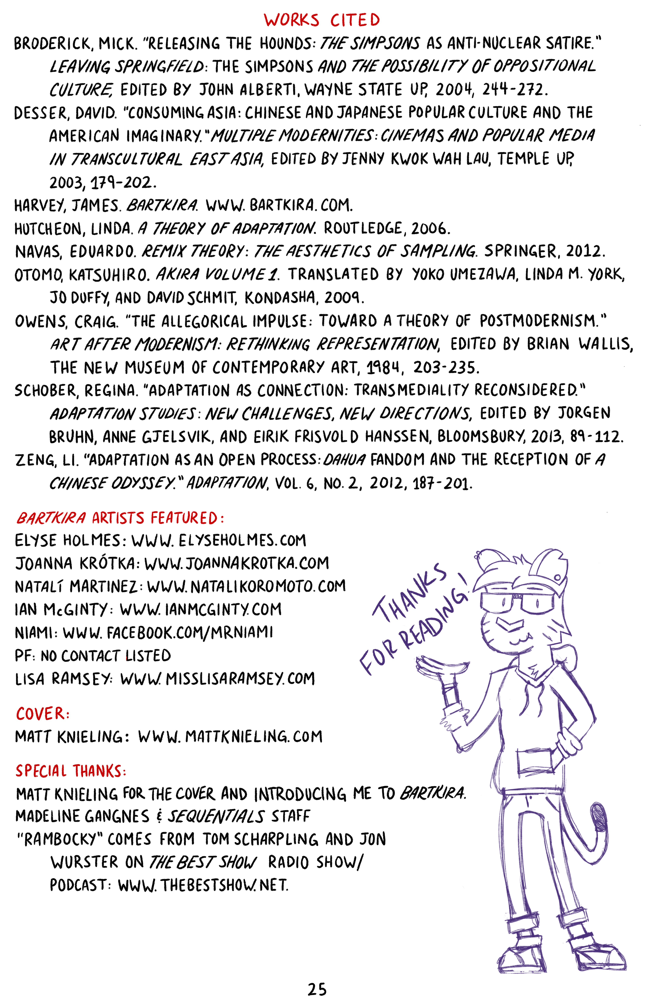
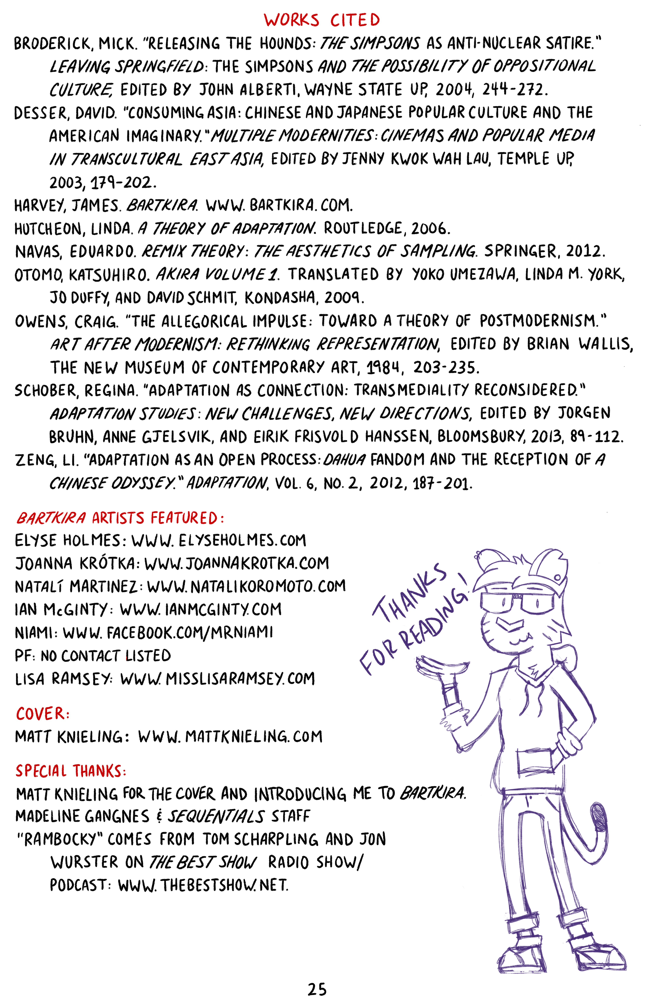

Charles Acheson | University of Florida
Posted 1 May 2020


 

Charles Acheson is a doctoral candidate in the Department of English at the University of Florida. His areas of study include Comics, Adaptation, Memory, Trauma, and 20th/21st Century American Literature. His previous work has appeared in Studies in the Novel, ImageTexT, The Lion and the Unicorn, and Under the Sun. He is currently working on completing his dissertation, titled “In the Shadow of the Code: Censorship, Underground Comix, and the Rise of American Graphic Memoir,” that covers the emergence of American graphic memoir as uniquely, politically-infused valence of visual life writing. In addition, he currently serves as the production editor for ImageTexT after having previously been managing and reviews editor. More of his materials are available at charlesacheson.com.
Recommended citation:
Acheson, Charles. “Neo-Springfield is About to E-X-P-L-O-D-E: The Nuclear Imagination and Grassroots Mashing of Bartkira.” Sequentials, vol. 1, no. 4, 2020.